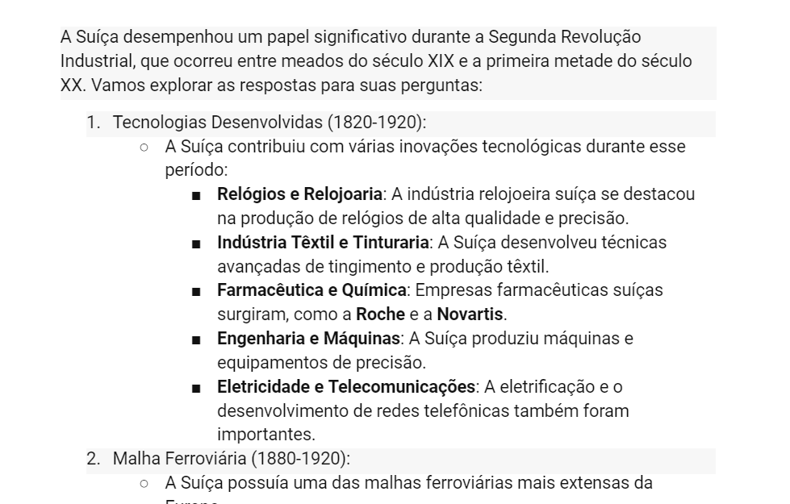
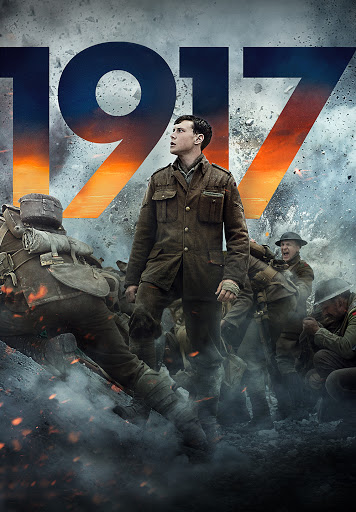

Essa é uma atividade em que pesquisamos um pouco sobre as tecnologias de um país, durante a segunda revolução industrial.
Foi muito interessante saber alguns diferenciais da suíça, como suas relojoarias

Essa é uma atividade em que vimos um filme e tivemos que dissertar sobre.
Foi muito legal ver o filme, principalmente a cena do rato

Essa é uma atividade em que pesquisamos um pouco sobre o Imperialismo e seus efeitos em outros paises.
É muito estranho como uma pequena vantagem temporal, afeta vários países